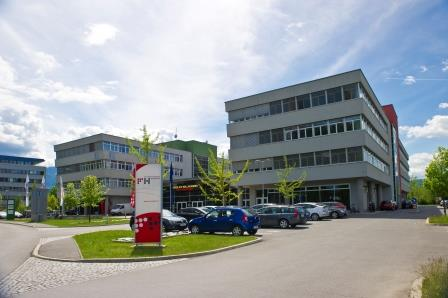

Acasă
Acasă Țări
Țări Catalog
Catalog Galerie foto
Galerie foto Experiente
Experiente Despre
DespreCarinthia UAS



Descriere
Infiintata in 1995, Carinthia University of Applied Science (CUAS) a inceput cu doar doua programe si 70 de studenti. In prezent, in cele cinci filiale sunt oferite peste 40 de specializari in limba germana si limba engleza, avand peste 2.000 de studenti full-time si part-time. Cu cei 2000 de absolventi universitatea si-a adjudecat deja un loc in mediul academic. Programele oferite sunt in domeniul ingineriei, arhitecturii, managementului, sanatatii si stiintelor sociale. Pe langa abordarea inovatoare de predare, universitatea ofera multe activitati practice. O parte dintre lectorii invitati sunt persoane care detin functii cheie in domeniul afacerilor. Carinthia University este prima institutie cu orientare profesionala din Austria, care ofera studentilor sai o baza de date pentru iPhone. Prin aceasta ei pot pastra programul de studiu in iPhone-ul lor sau pot afla unde se afla cea mai apropiata cafenea sau unde pot obtine reduceri pentru studenti.
Informații generale
Studii de licenta si programe de master in domeniile:
Tara: Austria
Limba de predare: engleza, germana
Ani de studiu: Bachelor: 3, Master: 2
Inceput an: octombrie
Burse: Nu
Campusuri: Villach, Spittal, Klagenfurt, Feldkirchen
Aeroporturi: Viena, München, Ljubljan
Programe de studiu:
Arhitectura si Inginerie Civila
Inginerie si IT
Stiinte medicale si Asistenta sociala
Management (cu studii de licenta in Management Cultural